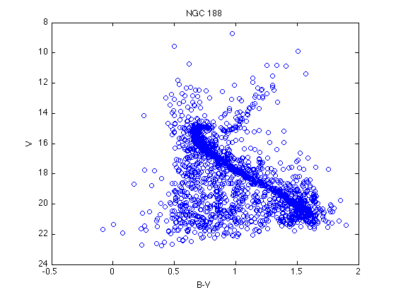
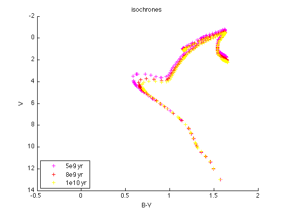
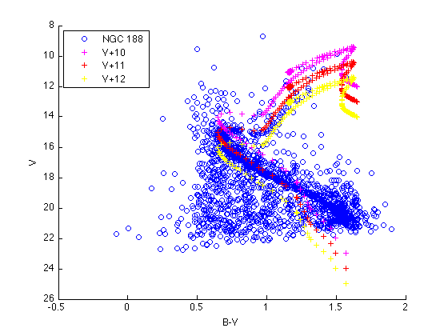

Age of cluster
Contents
Cluster HR Diagram
Now you should have both the isochrones and data from cluster NGC 188. To remind you what are the variables, use
whos
Name Size Bytes Class Attributes isoc 1x1 144232 struct myCluster 1x1 469052 struct
Let's make a HR diagram for NGC 188 by plotting V vs. B-V (don't forget to reverse the y-coordinate):
figure(3); clf; plot(...); set(gca, ...); title('NGC 188'); xlabel('B-V'); ylabel('V');
Isochrone Matching
Look carefully at the turning point of the main sequence, compare with your isochrones, and find out which isochrone has the same B-V value of the turning point.
figure(4); clf; hold on; plot(..., 'm+'); plot(..., 'r+'); plot(..., 'y+'); ... ...
Now, consider the difference in V value between cluster NGC 188 and the isochrone you chose. Move the isochrone up and down to find the best matching:
figure(5); clf; hold on; plot(..., 'bo'); plot(isoc. ... .B-isoc. ... .V, isoc. ... .V+10, 'm+'); plot(..., isoc. ... .V+11, 'r+'); plot(..., isoc. ... .V+12, 'y+'); ... ...